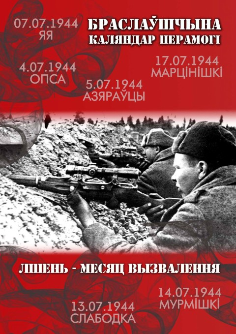

Да 70-годдзя Перамогі запускаем новую рубрыку "Каляндар Перамогі", у якой раз на тыдзень будзем публікаваць храналогію вызвалення Браслаўшчыны ад акупацыйных войскаў.
Інфармацыю можна захаваць у выглядзе тэкставых дакументаў унізе старонкі.
1. Пачатак вызвалення Браслаўшчыны
Вызваленне тэрыторыі Браслаўшчыны ад нямецка-фашысцкіх захопнікаў пачалося ў першыя дні ліпеня 1944 г. у выніку правядзення Шаўляйскай наступальнай аперацыі. 5 ліпеня пачаўся другі этап Беларускай наступальнай аперацыі “Баграціён”.Пасля вызвалення Полацка войскі 1-га Прыбалтыйскага фронту імкліва рухаліся на захад і дзейнічалі на стыку двух моцных груповак нямецкіх армій “Поўнач” і “Цэнтр”. Яны ізалявалі іх адна за адной і выключылі магчымыя ўдары групы армій “Поўнач” па флангах і тылу савецкіх войск.
У склад фронту ўваходзіла 6-я гвардзейская армія, часці якой непасрэдна вызвалялі Браслаўшчыну. У перыяд з 29 чэрвеня па 4 ліпеня галоўныя сілы 6 гвардзейскай арміі (гв.А) прасунуліся на 120-130 км і выйшлі на рубеж Мёры- паўднёвы бераг воз.Дрысвяты-м.Опса-паўночныя берагі азёр Богіна і Нарач. Перад войскамі арміі адкрылася магчымасць без апреатыўнай паўзы і падрыхтоўкі працягваць наступленне. Ва ўлік не бралася расцягнутасць паласы наступлення, слабая разведанасць сіл праціўніка і матэрыяльнае забяспячэнне.
Адной з мэт наступлення з’яўлялася хутчэйшае авалоданне важным стратэгічным пунктам Дзвінск (сучасны Даўгаўпілс). Планавалася нанесці імклівыя ўдары па некалькіх напрамках, абкружыць і разбіць магутны вузел абароны – Дзвінск. Накірункі ўдараў планаваліся наступным чынам: захапіць населеныя пункты Відзы і Дрысвяты і наступаць наперарэз чыгункі Дзвінск – Вільня на Дукштас; другі ўдар скіраваць на прарыў Міжазёрнага дэфіле Дрысвяты – Рычы на н.п. Турмантас і Зарасай; яшчэ адзін удар накіраваць на разгром умацаванняў паміж азёрамі Бужа – Струста – Снуды з выхадам на рубеж Бароўка – Дзвінск. Рашучыя ўдары планаваліся нанесці па Друі і Краславе з мэтай катнролю абодвух берагоў р. Заходняя Дзвіна. Выкананне гэтых задач дазваляла імкліва падыйсці да Дзвінска з некалькіх бакоў.
Друкуецца па кнізе “Памяць”
2. Малюнкі і вершы Пятра Касцюкевіча
Пятро Пятровіч Касцюкевіч нарадзіўся 27 ліпеня 1926 года ў невялікай вёсцы Шыці. Там прайшлі яго дзіцячыя гады. У 1941 г. паспяхова скончыў Шаркоўшчынскую школу і рыхтаваўся да паступлення ў мастацкае вучылішча. Вайна перашкодзіла Пятру рэалізаваць сваю задумку. Калі на тэрыторыі Шаркаўшчынскага раёна пачалі дзейнічаць партызаны, хлопец актыўна супрацоўнічаў з імі. У 1942 годзе ён – сувязны партызанскага атрада “Спартак”, у 1943 – конны разведчык пры штабе партызанскай брыгады “Спартак”, у 1944- удзельнік баявых аперацый і аўтар “Партызанскага дзённіка”, у якім запісвае палымяныя вершы, частушкі, робіць замалёўкі, адзначае розныя факты, падзеі і г.д. Казянскі лес стаў для яго родным домам. Тут ён уступіў у камсамол, прайшоў жыццёвую загартоўку.
Друкуецца па кнізе “Памяць”
3. Браслаўскае падполле
З успамінаў было кіраўніка падпольнай групы ў Браславе Э.А. Ціранава
…Яшчэ ў студзені 1942 года Васілеўскі звёў мяне з К. Анціпенкам, які прапанаваў арганізаваць у горадзе антыфашысцкую агентурную групу. Непасрэдна разведгрупай кіраваў Анціпенка (“Міша Воўк”). Пасля гэтага група ўвайшла ў склад атрада Шырокава, а калі з’явілася брыгада імя Жукава – у склад брыгады…
Хутка я прыцягнуў для працы Ананіча Аляксандра, Дубінку Івана, Зінкевіча Мікалая, Лук’янца Паўла, Брылевіча Мікалая, Зайцава Міхаіла, урача Ільючонка Юльянава. Уся гэта група фарміравалася паступова… Перад групай стаялі мэты: распаўсюджанне лістовак, улік руху і намераў ворага, іх колькасць у гарнізонах, перапраўка ваеннапалонных і насельніцтва ў партызанскія атрады, выяўленне правакатараў і здраднікаў… Дубінка сярод рабочых распаўсюджваў лістоўкі, даведваўся аб намерах паліцыі. Калі азяраўскім камсамольцам патрэбна было запалучыць спісы на маючы адбыцца расстрэл патрыётаў, то ён падрабіў ключы ад сейфа, і падпольшчыкам удалося выкрасці каштоўныя дакументы. Зінкевіч Мікалай працаваў слесарам, … псаваў аўіамашыны. У 1943 годзе ішла аўтамашына ў Дзвінск, ехалі 20 салдат. На шляху зляцела цяга і машына ўдарылася ў дрэва, загінула некалькі салдат. У далейшым яго пачалі падазраваць, таму са згоды Васілеўскага Зінкевіч працуе на ветлячэбніцы.
Лук’янцу Паўлу было даручана выявіць схільных ісці ў партызаны сярод ваеннапалонных. Ён падрыхтаваў групу, у асноўным з былых афіцэраў у колькасці 12 чалавек… Праз некалькі дзён яна была адпраўлена Мікалаем Брылевічам…Таццяна Брылевіч у асноўным выконвала ролю сувязной…
Друкуецца па кнізе “Памяць”
4. Вызваляючы наш раён
У ходзе вызвалення Браслаўшчыны ад нямецка-фашысцкіх войск часці Чырвонай Арміі панеслі значныя страты. Выяўлена 2714 прозвішчаў загінуўшых салдат і афіцэраў. Пераглядаючы хроніку падзей можна вылучыць найбольш жорсткія баі з вялікімі стратамі з юоку Чырвонай Арміі. Пацвярджэнне таму – штодзённыя баявыя данясення і звдкі, а таксама спісы беззваротных страт асасбістага складу. Такія спісы вяліся ў кожным падраздзяленн – роце, батальёне, палку, дывізіі, арміі, медыцынскай установе – медыка-санітарных батальёнах і палявых шпіталях.
З усіх падраздзяленняў Чырвонай Арміі, вызваляўшчых наш край, найбольшыя людскія страты панесла 9-я гв. сд (460 саладат і 55 афіцэраў).
Шмат воінаў загінула ў 154-й (248 салдат і 19 афіцэраў), 29-й (264 салдаты і 21 афіцэр), 47-й (215 саладт і 30 афіцэраў), 51-й (154 салдаты і 30 афіцэраў), а таксама ў падраздзяленнях 166-й і 46-й гвардзейскай сталковых дывізій.
Вялікая колькасць савецкіх салдат і афіцэраў загінула ў наваколлях Відзаў, Карасіна, Браслава, Друі, Быстрамаўцаў, Баруноў, Плюсаў. Так, 9-я гв. сд панесла значныя страты 6 ліпеня ў баі каля в.Шакуры пры наступленні на Браслаў. У гэтым баі загінула каля 50 чалавек. Некалькі соцен салдат і афіцэраў страціла 9-я гв. сд у баях каля вёсак Пустошка і Плюсы. За адзін толькі дзень баёў 7 ліпеня каля в.Яя на пераправе праз р.Друйка 473-і полк 154-й сд недалічыўся 65 салдат і афіцэраў. У выніку баявых дзеянняў на падыходзе да г.Браслава ў часцях 166-й сд загінула да 100 чалавек.
Друкуецца па кнізе “Памяць”
5. Трагедыя вёскі Стайкі
22 лістапада вёску сталі акружаць немцы. Яны ж праводзілі аблаву ў лесе, бо чулася страляніна здалёку. Было каля 10 гадзін раніцы, мы сядзелі ў хаце. Толькі што вярнуліся з лесу мужчыны, не паспелі пераапрануцца, як з’явіліся немцы. Мы сталі выскокваць з хаты. Дзевер мой так і пабег – адна нага ў боце, мабыць, не паспеў скінуць. Я схапіла за рукі нашых дзяцей – прыёмных сыноў Валодзю і Фелікса і падалася ўздоўж хаты праз агарод да хмызняку. Далей не пабеглі, бо маглі натыкнуцца на немцаў, схаваліся ў гушчары. Мы былі не адны, побач хавалася некалькі чалавек з вёскі. Сядзелі вельмі ціха, хаця пакутвалі, асабліва дзеці, ад холаду, з хаты ж выскачылі з чым хто быў. Гадзін каля трох пачуліся кулямётныя чэргі і амаль адразу ў чатырох месцах успыхнула полымя. Стала зразумела, што трэба некуды ісці. Пабрылі па лесе. Аднаго з хлопчыкаў па чарзе несла на плячах, хаця была цяжарная. Наперад гналі страх і адчай. Як сцямнела, страляніна заціхла, толькі недзе ўбаку пад лесам раз-пораз узляталі ракеты. Выйшлі да стагоў сена і тут зрабілі сабе прытулак. Хлопчыкі мае ўвесь час трымаліся, хаця б раз заплакалі. Толькі аднойчы ціхенька ўзгадалі: “Хаця б якую скібачку хлеба з сабой узялі”.
Друкуецца па кнізе “Памяць”
6. Аляксей Васілеўскі
У ліпені 1941 да сярэдзіны 1943 года узнік рух супраціўлення, які дзейнічаў у падполлі.
Першую антыфашысцкую падпольную арганізацыю на Браслаўшчыне стварыў Аляксей Аляксеевіч Васілеўскі. Жыхар горада Браслава, сын праваслаўнага святара, настаяцеля царквы ў гэтым горадзе, Аляксей карыстаўся аўтарытэтам сярод мясцовага насельніцтва. да 1939 года ён скончыў юрыдычны факультэт Пражскага ўніверсітэта ў Чэхаславакіі, валодаў нямецкай мовай. Захапляўся планерным спортам і быў да вайны інструктарам клуба Асаавіяхіма. Гарачы патрыёт, смелы чалавек Аляксей Аляксеевіч разумеў, што найбольшую карысць народу можа прынесці, застаючыся ў тыле ворага. Беспартыйны, ён не выклікаў падазрэння ў акупантаў і атрымаў пасаду намесніка Браслаўскага раённага бургамістра. Сваё службовае становішча Аляксей выкарыстаў для арганізацыі падполля і абароны насельніцтва. Яго першым памочнікам у гэтым стаў брат- малады ўрач Дзмітрый Аляксеевіч Васілеўскі, які прыняў на сябе абавязкі валаснога старасты ў вёсцы Слабодка.
Неўзабаве Аляксей Аляксеевіч прыцягнуў да падпольнай работы інжынера браслаўскага лясніцтва Уладзіміра Юліанавіча Відаўскага, які ўцёк ад акупантаў з Даўгаўпілса, і былога рэдактара камсамольскай газеты ў Вільнюсе Алега Якаўлевіча Пракаповіча. абодвух ведаў з маленства. Пазней да іх далучыўся ваеннапалонны, былы настаўнік Іван Мікалаевіч Елізараў. Сваіх людзей А.А. Васілеўскі уладкоўваў на працу ў адміністратыўны апарат акупантаў. А Я. Пракаповіч працааў ў раённай управе. Рэгіна Бараноўская – перакладчыцай у браслаўскай жандармерыі. Аляксеем былі ўстаноўлены сувязі з многімі патрыётамі ў горадзе Браславе і ў вёсках Браслаўскага і Відзаўскага раёнаў. Так склалася антыфашысцкая арганізацыя пад кіраўніцтвам А.А. Васілеўскага, якая распаўсюдзіла свій уплыў на ўсё Браслаўшчыну. Падпольшчыкі паставілі перад сабой задачу выратавання ад рэпрэсій мясцовых патрыётаў, а таксама акружэнцаў і ваеннапалонных, і такім чынам захавць кадры для ўзброеннай барацьбы.
Друкуецца па кнізе "Памяць"
7. З успамінаў Е. Гарбаценка
Калі пачалася вайна, мне было 10 годоў. У дзіцячай памяці засталіся многія эпізоды змрочнага, напоўненага страхам, перажываннямі, чуткамі, жыцця ў акупаваным Браславе. Асабліва моцна ў памяці адбіўся ў памяці адзін эпізод, які здарыўся на першы ці другі год акупацыі.
Адным разам я праходзіла праз рынкавую плошчу (у той час рынак знаходзіўся бліжэй да Замкавай гары, дзе цяпер дзіцячы сад-яслі № 2) і раптам убачыла, як за нейкай незнаёмай жанчынай бяжыць немец з вінтоўкай. Жанчына бегла хутчэй і тады немец прыпыніўся, прыцэліўся і стрэліў ёй науздагон. Жанчына ўпала, некалькі разоў варухнулася і больш не паднялася. Гітлеравец падыйшоў да яе, тузаноў нагой, ускінуў вінтоўку на плячо, пайшоў прэч. Было страшна, але дзіцячая цікаўнасць цягнула паглядзець на жудасную карціну зблізку. Жанчына ляжала, раскінуўшы рукі пад вялізным каляровым плакатам. Выгляд забітай, а таксама малюнкі на плакаце назаўсёды урэзаліся ў памяць. На кавалку фанеры намаляваны сумежныя тэрыторыі Латвіі, Літвы і Беларусі, межы паміж імі, а на гэтым фоне – карыкатурныя постаці трох чалавек. Латыш збірае на сваёй зямлі зброю, патроны, гранаты. Сам ён ужо абчапляны зброяй, але не перапыняе свайго занятку, намеры ў яго рашучыя. Літовец паказаны з палаючай паходняй, скіраванай у бок Беларусі. Ён шукае межы сваёй дзяржавы. Выцягнутая рука з паходняй ужо знаходзіцца над Беларуссю, але постаць чалавека ўсё роўна рухаецца наперад. На тэрыторыі Беларусі намаляваны хмызняк, за якім бачыцца постаць беларуса. Ён схіліўся над самагонным апаратам, больш яго нічога не турбуе. Відаць, гэтым плакатам немцы хацелі падкрэсліць нацыянальныя рысы суседдзяў і, здаецца, гэта ім удалося.
Друкуецца па кнізе "Памяць"
8. Анастасія Жукава
Гэта жанчына здзейсніла вялікі гуманны подзвіг. Называлі яе … Мамай…
Акупанты ўварваліся ў Браслаў 27 чэрвеня. Большасць устаноў не паспела эвакуіравацца і сярод іх установа асаблівая – дом груднога дзіцяці. А.А.Жукава працавала ў ім медсястрой. Ніхто не ведаў, як доўга давядзецца жыць у акупацыі. Некаторыя разважалі так: “Не да чужых дзяцей, калі за сваіх душа баліць.”
Яна думала інакш: “Птушаняты бяскрылыя… Як жа іх кінуць, калі лятаць яшчэ не могуць? Прападуць, як піць даць, прападуць. Сэрца ж трэба мець!”
І вырашыла: будзем жыць, як і жылі раней, дзяцей у бядзе не пакінула. Разам з ёй засталася нянька Марыя Васілеўская.
-Цяжка было, - успамінае Анастасія Антонаўна.- Неабходна было думаць, як пракарміцца. Садзілі бульбу, гародніну. Аб выхадных днях і размовы не было. Заснуць дзеці, а мы – на поле. Не лягчэй было і з адзеннем. Летам яшчэ так-сяк: трусікі, маечкі – вось і адзетыя. Цяжэй было зімой. Крыху дапамагала маці – яна прыносіла з нашага дома ўсё, што магло стаць дзіцячым адзеннем. Чым маглі, дапамагалі суседзі. А неяк наогул пашанцавала – на складзе знайшла зусім выпадкова кавалак матэрыялу. Дапамагалі і браслаўскія падпольшчыкі. Па ўказанню Аляксея Аляксеевіча Васілеўскага, вопытнага падпольшчыка, намесніка павятовага старасты, дом груднога дзіцяці фінансаваўся за кошт раённай управы. Васілеўскі арганізаваў збор прадуктаў для дзяцей.
- Розныя былі дзеці. Старэйшым было гадоў па пяць, - успамінае Анастасія Антонаўна, - а двое самых маленькіх – сямімесячныя. Цяжка жылося. Хварэлі дзеці. Бывала, дзень і ноч сядзіш каля якога, то адварам поіш, то прыпаркі кладзеш, то самаробнымі лекамі мажаш… За ўсю вайну ні адно дзіця не памерла.
Вайна толькі дабавіла сірот.
Анастасія Антонаўна прымала ўсіх. І для ўсіх гэты дом станавіўся родным, а яна – добрай ласкавай маці. Мамай, якая прыбірала, шыла, мыла бялізну, карміла, чытала казкі, нават спявала і танцавала.
Драматычным перыядам у жыцці Анастасіі Антонаўны і яе вялікай сям’і быў момант, калі гітлераўцы ўцякалі з Браслава. Яны маглі вывезці дзяцей, маглі проста забіць. Ёй дапамог, як яна думае, адзін нямецкі ваеннаслужачы.
Нажаль Анастасіі Антонаўны няма ў жывых, але яна пакінула пасля сябе вялікую сям’ю. І не было ў яе ўзнагарод, не атрымала яна ганаровых званняў, прэмій. Але хіба ад гэтага меншым стаў подзвіг, здзейснены ёю? Мы схіляем калені перад яе вялікім сэрцам.
Друкуецца паводле кнігі "Памяць"
9. Оля Максімовіч
Першае, што зрабіла Оля Максімовіч, калі прыйшлі нямецка-фашысцкія захопнікі, - разам з іншымі сябрамі схавала сцяг піянерскай дружыны Замошскай школы, у якой яна вучылася да вайны. Як і многія жыхары, Оля дапамагала трапіўшым у акружэнне вайскоўцам, прыносіла ім ежу, двойчы хавала іх ад праследванняў у хаце сваёй бабулі.
У 1942 годзе Вольга ўстанавіла сувязь з разведчыкамі партызанскай брыгады “За Радзіму”, дасціпна выконвала ўсе даручэнні. Неаднаразова накіроўвалася ў Браслаў за медыкаментамі, дастаўляла лістоўкі ў Шаркаўшчыну, Опсу, Слабодку і з дапамогай падпольшчыкаў распаўсюджвала іх сярод насельніцтва. Гэта была вельмі небяспечная праца: у любы момант фашысты маглі прыпыніць яе і абшукаць, што нясе. Аднак юнай патрыётцы ўдавалася паспяхова выконваць заданні.
У канцы верасня 1943 года Оля з важным даручэннем накіравалася ў вёску Слабодка, дзе размяшчаўся фашысцкі гарнізон. Збіраючыся ў шлях, яна ўзяла з сабой піянерскі гальштук. Выканаўшы заданне, Оля вярталася назад, але была схоплена. Немцы дапытвалі юную разведчыцу, патрабавалі, каб яна расказала, дзе знаходзяцца партызаны, аднак дзяўчына нічога не сказала. Тады акупанты вырашылі яе растраляць. Да месца казні прыгналі мясцовых жыхароў. Стоячы на краю ямы, Оля выхапіла свой гальштук і крыкнула:
-Мяне вы можаце забіць, а гальштук…
Аўтаматная чарга перарвала Олю Максімовіч. Так загінула адважная піянерка, імя якой занесена ў спісы ганаровых байцоў батальёна беларускіх арлянят.
Друкуецца па кнізе "Памяць"
10. Ліпень - месяц вызвалення

03.07.1944
Праціўнік аказвае супраціўленне і працягвае адыход на Дзвінск. Ягоная авіяцыя (Ю-87) праводзіць бамабардзіроўкі міжазёрнай прасторы. Дывізія дзейнічала ў партызанскім краі. У 10-00 яна, пасля вызвалення тэрыторыі Шаркаўшчынскага раёна, пачала наступленне на н.п. Опса з мэтай выхаду на рубеж Опса – Казяны, каб перарэзаць чыгунку Друя-Дукшты. 141-ы полк наступаў у напрамку Замошша-Опса і да 14-00 перадавыя атрадам авалодаў в.Опса. 135-ы гв.сп да 18-00 замацаваўся на мяжы Мілюнцы-Вайнюнцы. [ З журнала баявых дзеянняў 46-й гвардзейскай стралковай дывізіі]
ВЫЗВАЛЕНА ВЁСКА ІНАВА
ВЫЗВАЛЕНА ВЁСКА РУДАВА
ВЫЗВАЛЕНА ВЁСКА ГІРДЗЮШЫ
04.07.1944
141-ы полк авалодаў м.Дрысвяты… 135-ы полк да 16-00 авалодаў г.Відзы… Дывізія на працягу сутак вызваліла 80 населеных пунктаў, знішчыла да 20 гітлераўцаў… [ З журнала баявых дзеянняў 46-й гвардзейскай стралковай дывізіі]
Часці дывізіі, выконваючы загад камандзіра корпуса, на працягу ночы на 04.07.1944г. вялі разведку праціўніка і пасля перадыслакацыі пачалі наступленне ў напрамку Браслава… 423-і полк, праводзячы разведку і рухаючыся ў напрамку Пузыры, сустрэў праціўніка на рубяжы Краснасельцы-Ельня. Імклівым ударам з паўднёвага захаду, дзейнічаючы двума батальёнамі, да 6-00 полк поўнасцю разбіў праціўніка і авалодаў Краснасельцамі, узяў пад кантроль шасэйныя дарогі на Браслаў, на Бароўку, Карасіна і перарэзаў чыгунку Опса-Друя. У гэтым баі захоплены дзве 150-мм гарматы, чатыры 81-мм мінамёты, 8 кулямётаў і знішчана значная колькасць салдат і афіцэраў праціўніка. З 7-00 да 8-00 адбіты дзве контратакі праціўніка… 735-ы полк, выконваючы задачу, вёў разведку і да 6-00 04.07.1944 г. выйшаў і заняў абарону:1-ы батальён – Усяны, кантралюючы шашу, 2-і батальён – Злота… 3-і батальён – Ахрэмаўцы… [З баявога данясення штаба 166-й стралковай дывізіі штабу корпуса ад 4.07.1944 г. 8-00]
ВЫЗВАЛЕНЫ НАСЕЛЕНЫ ПУНКТ ЗАРАЧЧА-МЛЫН
ВЫЗВАЛЕНА ВЁСКА ВАЙНЮНЦЫ
ВЫЗВАЛЕНА ВЁСКА ОПСА
ВЫЗВАЛЕНА ВЁСКА БОГІНА
ВЫЗВАЛЕНА ВЁСКА КАЗЯНЫ
ВЫЗВАЛЕНА ВЁСКА УСЯНЫ
05.07.1944
46-я гв. cд абараняецца на фронце Майшулі-Опса-Мурмішкі-Стаўрова. Праціўнік пры падтрымцы 10 танкаў, артмінамётных батарэй, самаходных гармат перайшоў у контратаку з раёна Мялка-Рычаны і пасля жорсткага бою авалодаў н.п.Станкавічы, Дрысвяты, Уладзіславава… Батальён 139-га палка на працягу ночы адбіваў атакі, утрымлваючы Відзы. Праціўнік 2 батальёнамі з 18 танкамі заняў г.Відзы, страціўшы пры гэтым 7 танкаў і да 200 салдат. Камандзір дывізіі вырашыў трывала ўтрымліваць рубеж, выматаць і абяскровіць праціўніка. [ З журнала баявых дзеянняў 46-й гвардзейскай стралковай дывізіі]
ВЫЗВАЛЕНА ВЁСКА АЗЯРАЎЦЫ
ВЫЗВАЛЕНА ВЁСКА ПАГОШЧА
06.07.1944
Камандзір вырашыў абараняць свае пазіцыі і дзеяннямі перадавых атрадаў авалодаць Дрысвятамі і Відзамі. Страты з 4 па 7 ліпеня: забіта і паранена 292 чалавекі… [ З журнала баявых дзеянняў 46-й гвардзейскай стралковай дывізіі]
… Вораг на левым фланзе арміі з раёнаў Жвірблі, на захад ад воз.Струста, Станкавічы, на поўнач ад м.Дрысвяты, бурцішкі, на поўначы захад ад м.Відзы да 3-00 сіламі да 2 батальёнаў пяхоты з 10-15 танкамі бесперапынна атакаваў злучэнні 2-га гв.ск. У выніку атак праціўнік адкінуў нашы падрадзяленні з раёнаў Зазоны, м.Дрысвяты, м.Відзы. Далейшы рух быў прыпынены…
2-1 гв.ск да 3-00 вёў бой з атакуючай пяхотай і танкамі ў раёне Зазоны, лес за 2 км на паўднёвы захад ад м.Дрысвяты, м.Відзы. Зранку сіламі двух палкоў 9-я гв. cд, працягваючы наступленне, авалодала рубяжом Азяраўка, Латышкі, Сутароўшчына. Адзін полк у раёне Ахрэмаўцы рыхтуецца да баявых дзеянняў. 166-я сд двумя палкамі абараняла рубеж Краснасельцы, Усяны, Пузыры, сіламі перадавога атрада вяла баі за Зазоны, Браслаў. У выніку бою авалодала гаем на паўночны захад ад Браслава… Па няпоўных дадзеных за суткі бою знішчана да 900 салдат і афіцэраў, 4 гарматы, 10 аўтамашын, падбіта 7 танкаў. [З баявога данясення штаба 6-й гвардзейскай арміі камандуючаму войскамі 1-га Прыбалтыйскага фронту ад 06.07.1944г. 21-00]
Праціўнік аказвае моцнае супраціўленне наступаючым часцям дывізіі агнём мінамётаў і артылерыі.
302-і сп у 11-20 штурмам авалодаў м.Друя. Неабходна адзначыць храбрасць, адвагу і ўмельства выходзіць з крытычных сітуацый камандзіра палка палкоўніка Арабца, які сам падняў сваіх салдат у атаку і павёў на штурм м.Друя. Смелымі і адважнымі дзеяннямі ўсяго палка, натхнённага палкоўнікам Арабцом, горад быў узяты з найменшымі стратамі…
106-ы сп да 17-00, збіваючы замацаваўшагася ворага з высот, адбіваючы шматлікія кантратакі пяхоты і танкаў, выйшаў на ўсходні бераг р.Друйкаі пачаў рыхтавацца да яе фарсіравання. [З журнала баявых дзеянняў 29-й Стралковай дывізіі за ліпень 1944г.]
Дывізія на працягу дня двума палкамі прследавала прціўніка ў напрамку воз.Дзісна, а адным палком вяла наступленне на м.Відзы. 1124-ы сп меў задачу блакіраваць Відзы і абыходзячым манеўрам акружыць і знішчыць праціўніка. У 18-00 1124-ы сп пры падтрымцы 908-га артпалка атакаваў гарнізон праціўніка, але сустрэў жорсткае супраціўленне і вымушаны быў адысці… [З журнала баявых дзеянняў 334-й стралковай дывізіі]
ВЫЗВАЛЕНА ВЁСКА ЗАЗОНЫ
ВЫЗВАЛЕНЫ НАСЕЛЕНЫ ПУНКТ ДРУЯ
ВЫЗВАЛЕНЫ ГОРАД БРАСЛАЎ
11. Вызваляючы наш раён
У ходзе вызвалення Браслаўшчыны ад нямецка-фашысцкіх войск часці Чырвонай Арміі панеслі значныя страты. Выяўлена 2714 прозвішчаў загінуўшых салдат і афіцэраў. Пераглядаючы хроніку падзей можна вылучыць найбольш жорсткія баі з вялікімі стратамі з боку Чырвонай Арміі. Пацвярджэнне таму – штодзённыя баявыя данясення і звдкі, а таксама спісы беззваротных страт асасбістага складу. Такія спісы вяліся ў кожным падраздзяленн – роце, батальёне, палку, дывізіі, арміі, медыцынскай установе – медыка-санітарных батальёнах і палявых шпіталях.
З усіх падраздзяленняў Чырвонай Арміі, вызваляўшчых наш край, найбольшыя людскія страты панесла 9-я гв. сд (460 саладат і 55 афіцэраў).
Шмат воінаў загінула ў 154-й (248 салдат і 19 афіцэраў), 29-й (264 салдаты і 21 афіцэр), 47-й (215 саладт і 30 афіцэраў), 51-й (154 салдаты і 30 афіцэраў), а таксама ў падраздзяленнях 166-й і 46-й гвардзейскай сталковых дывізій.
Вялікая колькасць савецкіх салдат і афіцэраў загінула ў наваколлях Відзаў, Карасіна, Браслава, Друі, Быстрамаўцаў, Баруноў, Плюсаў. Так, 9-я гв. сд панесла значныя страты 6 ліпеня ў баі каля в.Шакуры пры наступленні на Браслаў. У гэтым баі загінула каля 50 чалавек. Некалькі соцен салдат і афіцэраў страціла 9-я гв. сд у баях каля вёсак Пустошка і Плюсы. За адзін толькі дзень баёў 7 ліпеня каля в.Яя на пераправе праз р.Друйка 473-і полк 154-й сд недалічыўся 65 салдат і афіцэраў. У выніку баявых дзеянняў на падыходзе да г.Браслава ў часцях 166-й сд загінула да 100 чалавек.
Палкі 47-й сд з 11 па 18 ліпеня вялі жорсткія баі і панеслі ціяжкія страты каля вёсак Ганжышкі, Крукі, Павялішкі, Ілга. Такія ж страты былі і ў 29-й, 270-й, 90-й гв. і іншых стралковых дывізіях. Журнал баявых дзеянняў 51-й сд на 13.7.1944 г. паказвае, што каля в.Карасіна ў гэты дзень загінулі 38 і былі паранены 141 воін дывізіі.
На 01.01.2015 г. на тэрыторыі Браслаўскага раёна знаходзіцца 35 брацкіх магіл, 12 індывідуальных могілак і 2 воінскіх пахаванняў. 7 брацкіх магіл унесены ў Дзяржаўны спіс Рэспублікі Беларусь гісторыка-культурнай спадчыны Рэспублікі Беларусь: брацкая магіла ў г. Браславе, аг. Ахрэмаўцы, аг. Друя, аг. Казяны, г.п. Відзы на могілках і ў цэнтры, в. Зарачча.